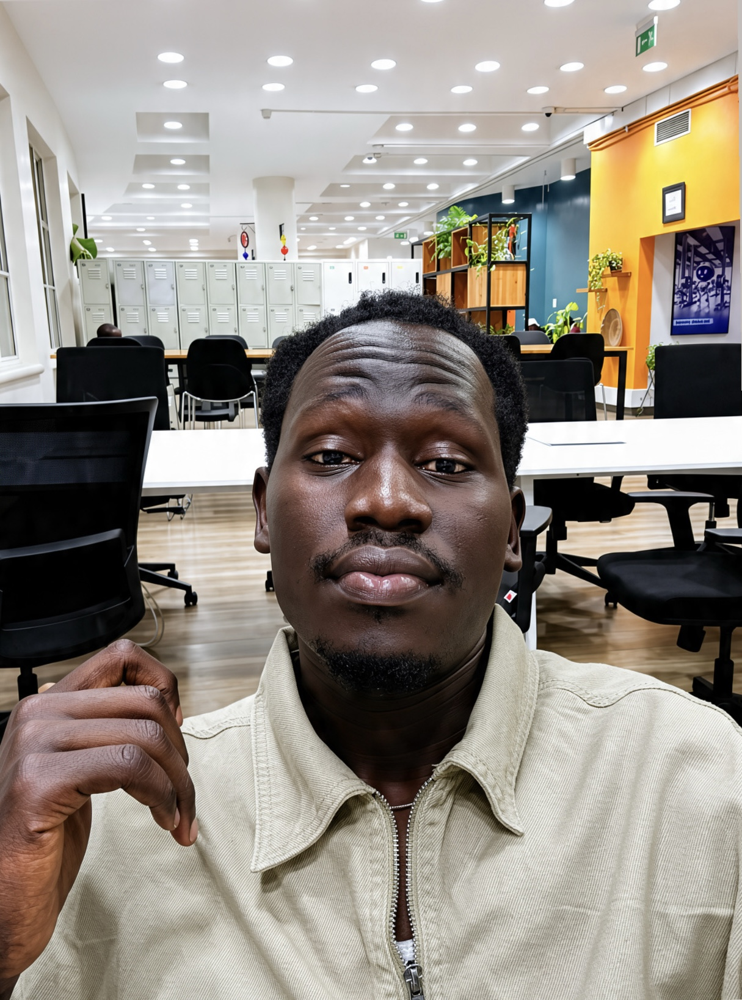
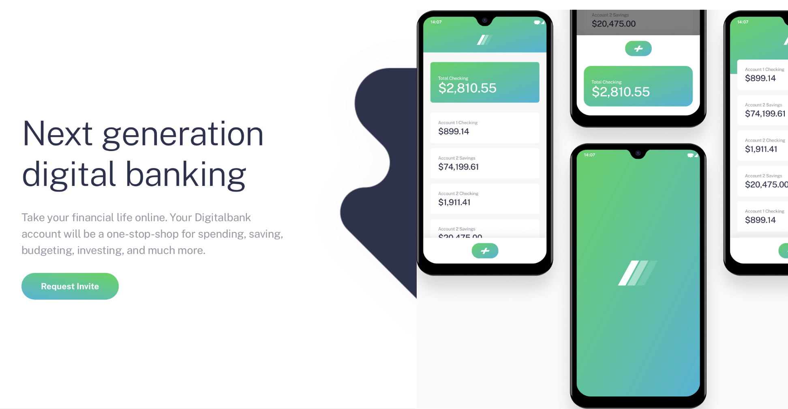
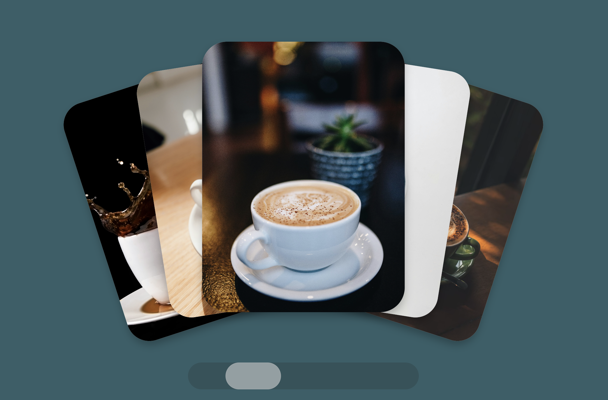
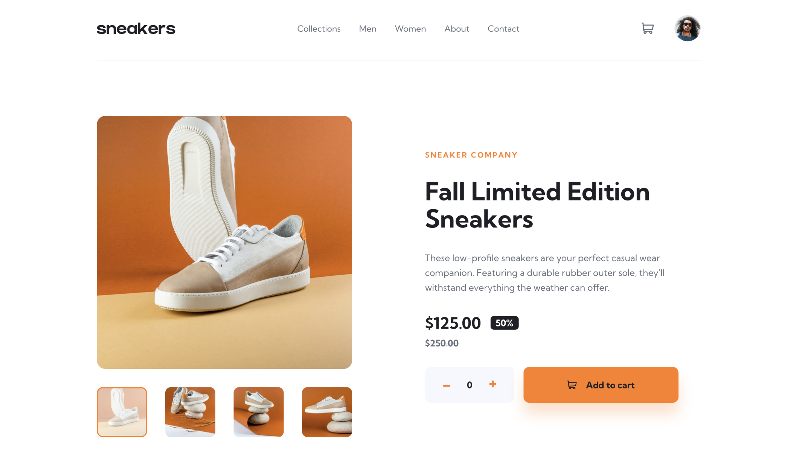

Senior UX/UI Designer at Juba Tech Hub
Led design for three enterprise products.
I’m Kuach John — a UX/UI designer, brand strategist, and frontend developer creating digital products that are beautiful, functional, and built to perform.

PROFILE / 001I am Kuach John, a designer and developer from Nairobi. I believe good design is invisible, it simply works.
Every project taught me something. Every failure taught me more.
Led design for three enterprise products.
Daystar University — Graduated.
Shipped 14 projects for clients across four continents.
A broken HTML page that changed everything.
Built visual identities for 15 startups.
I do not collect tools, I master the ones that matter.
Figma, user research, wireframing, prototyping, and design systems. I turn messy problems into clear flows.
Photoshop, Illustrator, Canva, branding, and social media design. I build identities that hold up under pressure.
HTML, CSS, JavaScript, React, Tailwind, Git, responsive design, and accessibility. I write code that ships.

Design is not my whole life. It just makes the rest of it better.
I play fast games online. It teaches me to think three moves ahead.
The Ngong Hills clear my head. Every trail is a reset button.
Though I'm not perfect at taking photos, I sometimes shoot the streets of Nairobi. The light here is honest and unforgiving.
A collection of interface design, frontend builds, and visual explorations. Pick a project to explore it live.

↗A responsive online banking experience, designed and built for desktop, tablet, and mobile.

↗Layered photo-carousel concept inspired by the warmth of café culture. A playful balance of expressive imagery, depth, and clarity.
Responsive analytics dashboard with four platform cards, daily engagement stats, and a light/dark theme switcher.

↗Premium sneaker product page with a working image gallery, cart, mobile navigation, and desktop lightbox.
A motion study exploring trim-path animation for hand-drawn line icons, and opacity fades for closed shapes.
Event posters, flyers, logos, brand identities, and other visual design work.
Thoughtful creative work at every step — whether you need a sharper brand, a clearer product, or a website ready for the real world.
Intuitive user flows, wireframes, and polished interface design that put people first.
Visual identities, logos, posters, and digital graphics with a point of view.
Responsive, accessible web experiences built to feel as good as they look.
Have a project, a role, or just a good idea? I’d love to hear about it.
Start a conversation ↗